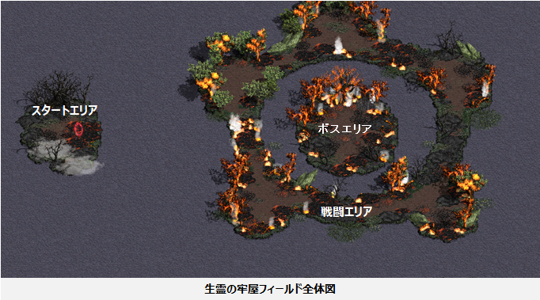

メニュー
トップ >>
ダンジョン >>
ヤティカヌ >>
生霊の牢屋
クリア時に大量の経験値を獲得できる、ヤティカヌ滞在組のメイン育成コンテンツです。
2025年4月24日 (ver 0.0852) 実装
基本仕様
入場までの準備
入場券の作り方 (3アイテム)
関連クエスト
ダンジョン構成と登場モンスター
フィールド補正
注意事項
※ クリアしなかった日があっても、未消化分が翌日に繰り越されることはありません。
(例: 本日 クリア失敗 → 翌日 のクリア可能回数は 1回 のまま)
要は古代森コイン30枚で1回本ダンジョンに挑戦できる。
ガイド経由の場合は、条件を満たすとミニマップ下の「Guide」に LV 1251 ~ LV 1451 区間コンテンツとして「生霊の牢屋」が表示されます。選択するとフィールド「ガレリオン野営地」に飛びます。
生霊の牢屋の戦闘エリアに入場するとデイリークエスト「幽閉された生霊」が自動的に始まり、クリア時に達成扱いになります。
■ NPC「急ぎの生霊」商店についての注意
・1,500レベル以上のキャラクターは商店を利用できません。
・1,501レベル以上で前提クエスト未進行のキャラクターには NPC自体が表示されません。
生霊の牢屋 フィールド全体図
・途中放棄はスタートエリアのオブジェクト (座標 21,75) からのみ可能。
・戦闘エリアに進入した後は、自力での退場ができません。
・キャラクター死亡時は 「街へ戻る」 または 「(完全)復活スクロール」 による復活が可能。
■ そのほかの制限
・フィールド内ではテレポート機能 (ポータル・スフィアー、ムーンストーン、コーリング、タウンポータル等) が使用できません。
・150分以内にクリアできなかった場合は自動で終了になります (鍵は消費済)。
出典: 公式お知らせ「生霊の牢屋についてのご案内」(2025年4月24日)
生霊の牢屋
ヤティカヌフィールドにあるレベル 1,250 ～ 1,499 区間専用の1人用経験値ダンジョン。クリア時に大量の経験値を獲得できる、ヤティカヌ滞在組のメイン育成コンテンツです。
2025年4月24日 (ver 0.0852) 実装
基本仕様
入場までの準備
入場券の作り方 (3アイテム)
関連クエスト
ダンジョン構成と登場モンスター
フィールド補正
注意事項
基本仕様
| 対象レベル | 1,250 ～ 1,499 |
|---|---|
| 人数 | 1人専用 |
| クリア制限 | 1日1回 (毎日 00:00 にリセット) |
| 制限時間 | 入場後 150分 (超過で自動終了) |
| 入場枠 | 秘密ダンジョン入場回数とは別カウント |
| 主な報酬 | クリア時の大量経験値 (経験値増加スフィアー / ポータル・パワーキット / ジョン・マルコのお守り などの効果が乗ります) |
※ クリアしなかった日があっても、未消化分が翌日に繰り越されることはありません。
(例: 本日 クリア失敗 → 翌日 のクリア可能回数は 1回 のまま)
入場までの準備
- レベル 1,250 以上 にして、エピソードクエスト「ヤティカヌの茂み」内の 「その茎を切れ」 をクリア
- 前提クエスト 「急ぎの依頼」 を1回クリア (NPC「急ぎの生霊」が利用可能になる)
- 素材を集めて入場券 「生霊の牢屋の鍵」 を作成
- 「ヤティカヌ月の出森林 (座標 17,381)」 のポータルオブジェクトから入場
要は古代森コイン30枚で1回本ダンジョンに挑戦できる。
ガイド経由の場合は、条件を満たすとミニマップ下の「Guide」に LV 1251 ~ LV 1451 区間コンテンツとして「生霊の牢屋」が表示されます。選択するとフィールド「ガレリオン野営地」に飛びます。
入場券の作り方 (3アイテム)
入場券「生霊の牢屋の鍵」は、古代森のコイン → 不吉な壺 → 古代影の死霊討伐 → 封印の印章 → 鍵 の流れで作ります。| アイテム | 獲得方法 | 必要財貨 (数量) | 購入制限 | 備考 |
|---|---|---|---|---|
| 不吉な壺 | NPC「急ぎの生霊」商店 (ヤティカヌ月の出森林 / 座標 17,381) |
古代森のコイン × 3 | 1日 10個 | 取引不可 / 銀行取引不可 使用するとモンスター「古代影の死霊」が出現 |
| 封印の印章 | 「不吉な壺」から登場するモンスター 「古代影の死霊」を討伐 (100% 獲得) |
－ | － | 取引不可 / 銀行取引不可 / 破壊不可 所有権は「不吉な壺」を使用したキャラクター |
| 生霊の牢屋の鍵 | NPC「急ぎの生霊」商店 (ヤティカヌ月の出森林 / 座標 17,381) |
封印の印章 × 10 | 1日 1個 | 取引不可 / 銀行取引不可 / 破壊不可 ダンジョンクリア時に消滅 |
関連クエスト
| クエスト名 | 進行フィールド | 関連NPC / オブジェクト | スタート条件 |
|---|---|---|---|
| 急ぎの依頼 (前提クエスト) |
ヤティカヌ月の出森林 | 急ぎの生霊 (座標 17,381) | レベル 1,250 以上 エピソードクエスト「ヤティカヌの茂み」の「その茎を切れ」クリア |
| 幽閉された生霊 (デイリークエスト) |
ヤティカヌ月の出森林 | オブジェクト (座標 20,377) | 「生霊の牢屋の鍵」所持 |
生霊の牢屋の戦闘エリアに入場するとデイリークエスト「幽閉された生霊」が自動的に始まり、クリア時に達成扱いになります。
■ NPC「急ぎの生霊」商店についての注意
・1,500レベル以上のキャラクターは商店を利用できません。
・1,501レベル以上で前提クエスト未進行のキャラクターには NPC自体が表示されません。
ダンジョン構成と登場モンスター
スタートエリア → 戦闘エリア → ボスエリア の3層構成。戦闘エリアのモンスターを討伐して進むとボスエリアに移動し、ボス 「沸鉄の看守」 を討伐するとクリアです。
生霊の牢屋 フィールド全体図
| 区分 | 登場モンスター | レベル |
|---|---|---|
| スタートエリア | － | － |
| 戦闘エリア | 封印の石碑 | 1,300 |
| ダスクライダー | 1,250 ～ 1,275 | |
| ナイトマローダー | 1,250 ～ 1,275 | |
| ボスエリア | 沸鉄の看守 | 1,325 |
フィールド補正
生霊の牢屋フィールド内では、以下の補正効果が適用されます。| プレイヤー補正 | モンスター補正 |
|---|---|
| ステータス低下 30 | 物理致命打抵抗 10 |
| 魔法抵抗制限 50 | 魔法致命打抵抗 10 |
| ◆火抵抗減少 80 | 超越再生効果補正 100 |
| ◆水抵抗減少 80 | 魔法体力吸収補正 100 |
| ◆風抵抗減少 80 | － |
| ◆大地抵抗減少 80 | － |
| ◆闇抵抗減少 80 | － |
注意事項
■ 退場・死亡時の挙動・途中放棄はスタートエリアのオブジェクト (座標 21,75) からのみ可能。
・戦闘エリアに進入した後は、自力での退場ができません。
・キャラクター死亡時は 「街へ戻る」 または 「(完全)復活スクロール」 による復活が可能。
■ そのほかの制限
・フィールド内ではテレポート機能 (ポータル・スフィアー、ムーンストーン、コーリング、タウンポータル等) が使用できません。
・150分以内にクリアできなかった場合は自動で終了になります (鍵は消費済)。
出典: 公式お知らせ「生霊の牢屋についてのご案内」(2025年4月24日)